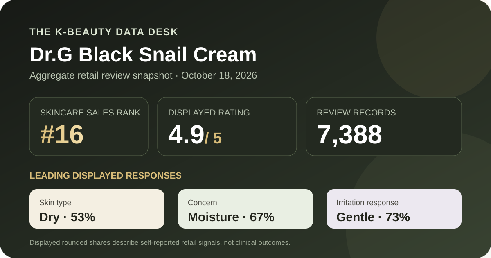
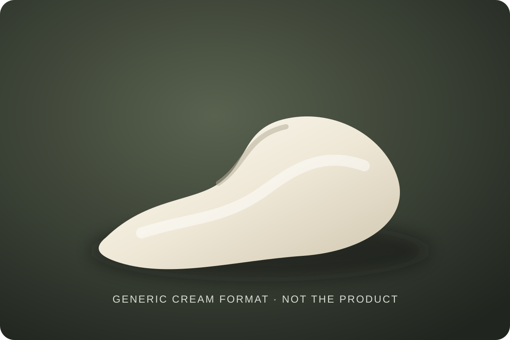

Data captured October 18, 2026. This analysis uses only a Korean K-beauty retail platform's displayed aggregate rating, star distribution, anonymous shopper polls, and automated theme summary. It does not reproduce or translate individual review text, names, or photos.

The short version: The listing showed 4.9 out of 5 from 7,388 review records. The displayed rating split was 93% five-star, 6% four-star, 1% three-star, and 0% each for two- and one-star. Dry skin, moisture concern, and the gentle response led their respective shopper polls.
The visible average was 4.9 stars. The product header displayed 7,388 review records, and the detailed review panel repeated the same count. That agreement matters because it avoids combining a current headline score with a different review total from another product variant or capture.
The detailed panel displayed this rounded star distribution:
The five-star share is the dominant storefront satisfaction signal, but it is not a controlled comparison. The interface does not reveal duration of use, whether every shopper reviewed the same pack configuration, the rest of each routine, how expectations shaped scores, or whether every record answered every optional poll.
Whole-number zeros need cautious reading. A displayed 0% can include a small nonzero share hidden by rounding, so it should never be translated into “nobody disliked it.” The average and distribution are useful for orientation, not for calculating exact reviewer counts or proving performance.
The skin-type poll showed 53% dry, 42% combination, and 4% oily. The displayed values total 99% after rounding. Dry skin is the largest group, yet combination skin is also strongly represented; together they account for nearly the entire visible poll.
That does not mean the cream is suitable for every dry or combination-skin routine. The labels are self-reported and do not control season, climate, age, cleansing habits, concurrent products, sensitivity history, or how respondents define their own skin type. The smaller oily-skin share also limits how confidently the overall score can be generalized to that group.
The separate concern poll displayed 67% moisture, 18% soothing, and 15% wrinkle or brightening concern. This tells us which broad questionnaire labels shoppers selected. It does not measure water content, transepidermal water loss, redness, elasticity, pigmentation, or any other clinical endpoint.
The product name includes “Black Snail,” while the ranking promotion used glow and firmness language. Those phrases help identify the listing but do not establish ingredient identity, ingredient amount, delivery, or effect. This analysis did not authenticate the current full formula or compare it against an independently documented specification.
The irritation poll showed 73% gentle, 25% ordinary, and 1% felt irritation, totaling 99% after rounding. The gentle response leads, but a quarter chose the middle response and the interface does display an irritation response. That is a reason to preserve uncertainty rather than turn the poll into a universal safety claim.
Self-reported gentleness cannot rule out allergy, stinging, congestion, eye-area discomfort, or incompatibility with another step. Patch-testing decisions and use instructions should come from the current label and an individual's circumstances, not from a crowd percentage alone.

The retailer places this item in the cream category. In general format terms, a cream is a leave-on emulsion designed to spread across skin, but that category does not reveal this product's exact viscosity, richness, scent, rub-in time, finish, or behavior under sunscreen and makeup.
I did not handle or apply this product. The illustration above is deliberately generic and does not reconstruct its real color or texture. Follow the current package for application area, amount, frequency, storage, and precautions. A favorable review average is not a substitute for those directions.
The retailer's automated summary classified 96% of its recent-review subset as positive. It grouped anonymous discussion around three broad themes: rich moisture or nourishment impressions, value from the promotional pack, and firmness or glow impressions. Those categories are useful as a map of what shoppers discussed, not as verified claims.
The summary did not expose a reproducible sampling method, denominator, time window, or causal design in the visible interface. It also blended subjective sensory impressions with value judgments about the 1+1 configuration. For those reasons, this article does not repeat the generated prose, attribute it to individuals, or treat the themes as proof that the cream changes skin structure or appearance.
At capture, the Korean listing showed a ₩33,000 reference price and a ₩24,750 promotional price for the 50 ml 1+1 plan, with a 15 ml bonus mentioned in the ranking title. The page displayed a unit-price line of ₩24,750 per 100 ml.
Prices, coupons, gifts, inventory, and selected configurations can change quickly. Before comparing value, verify the current quantity, authorized seller, checkout total, return terms, and whether the bonus remains available. Review records may also span older offers or configurations rather than only the exact promotion shown on capture day.
The defensible reading is narrow: this was the first valid unpublished product after fifteen higher-ranked listings were excluded for existing coverage; its 7,388-record profile was strongly positive; dry and combination skin dominated the displayed skin-type poll; moisture led the concern responses; and the irritation poll leaned gentle without being unanimous.
Those signals make the listing worth a closer check for readers comparing cream formats and current promotional value. They do not justify calling it a proven firming treatment, a guaranteed glow product, a reaction-free formula, or a certain match for dry skin. The next decision should rest on the current ingredient list and directions, personal preferences, and professional advice when a medical concern is involved.
Dry skin was the largest displayed skin-type response at 53%, followed by combination skin at 42% and oily skin at 4%. That describes poll representation, not proven suitability or a guaranteed result.
The retailer's anonymous automated summary grouped recent discussion around firmness and glow impressions, but this is not clinical evidence and cannot establish that the cream caused those outcomes.
The captured irritation poll showed 73% gentle, 25% ordinary, and 1% felt irritation. These rounded self-reported shares cannot predict individual tolerance.
The listing identifies a cream format. This analysis did not apply the product and does not claim a specific thickness, scent, absorption speed, finish, or layering behavior.
It is a strong retail satisfaction signal across 7,388 linked records. It is not a clinical trial, proof of efficacy, or a prediction for one person's skin.
Source: Olive Young Korea product page, captured October 18, 2026. Product title, ranking, pack, price, rating, review count, star shares, poll values, and automated themes can change.
Published by The K-Beauty Data Desk. The source does not independently verify every buyer's identity, and this page is an editorial analysis of retailer-displayed aggregates—not medical advice or a substitute for the current product label.
← All reviews · Review-volume rankings · Skin-poll explorer · Methodology